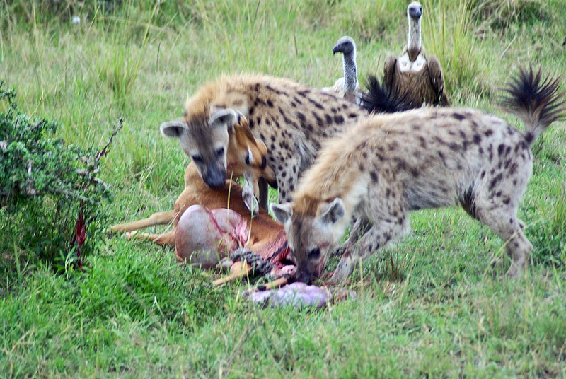

O clima semiárido pode ser encontrado tanto na porção norte como no extremo sul do continente africano. Os países com esse clima são: Botswana, parte da Niger, parte do Mali, Somália, Marrocos, Argélia, Tunísia, Líbia, Egito, Senegal, Gâmbia, Burkina Faso, Chade, Sudão, Somália, Angola, Zâmbia e Namíbia.
As savanas são biomas predominantes em climas tropicais, distribuídos pela América do Sul, África, Ásia e Oceania. No Brasil, correspondem ao Cerrado e à Caatinga. Caracterizam-se pela alternância entre uma estação seca e outra chuvosa, com temperaturas variando de moderadas a altas. A vegetação é composta principalmente por gramíneas, arbustos e árvores esparsas, adaptadas à seca e ao fogo, crescendo em solos geralmente pobres em nutrientes e ácidos.
A fauna das savanas é bastante diversa, incluindo desde grandes mamíferos, como zebras, elefantes e girafas na África, até pequenos insetos polinizadores. O bioma possui rios intermitentes e perenes, dependendo da região, com alguns rios secando durante a estação seca e outros correndo o ano todo. No Brasil, o Cerrado abriga nascentes de importantes rios perenes como o Paraná e o São Francisco, enquanto a Caatinga tem cursos d'água mais temporários.
As savanas podem ser classificadas em diferentes tipos: tropicais, encontradas em climas quentes com estações seca e chuvosa bem definidas; temperadas, que ocorrem em latitudes médias com temperaturas mais amenas; mediterrâneas, desenvolvidas sobre solos pobres em nutrientes; pantanosas, que contêm áreas alagáveis em períodos chuvosos; e montanhosas, localizadas em áreas de elevada altitude com vegetação de baixo porte.
As savanas constituem hábitats para uma enorme variedade de animais, havendo a distinção da ocorrência de espécies de país para país. Encontram-se nesse bioma desde grandes mamíferos até pequenos insetos polinizadores. As herbívoras constituem a maioria das espécies encontradas nesse tipo de bioma. Destaca-se ainda que na África se vivem os maiores animais das savanas.
Entre os animais da Savana, estão:
• zebras;
• elefantes;
• leões;
• girafas;
• hienas;
• búfalos;
• rinocerontes;
• hipopótamos;
• antílopes;
• lagartos;
• cupins;
• javalis;
• gado;
• leopardos.
A vegetação e a flora da Savana estão diretamente associadas às características edafoclimáticas da área onde se encontram, ou seja, ao clima e ao tipo de solo. Esse bioma é caracterizado pelas formações campestres, com a predominância de gramíneas, arbustos e árvores de pequeno e médio porte. Além disso, o dossel das savanas é aberto, o que significa dizer que as árvores e arbustos são bem espaçados na superfície, com a ausência de formações fechadas ou densas como ocorre nas florestas tropicais, por exemplo.
As árvores e demais plantas da Savana são adaptadas aos períodos de seca e também ao fogo, uma vez que há a ocorrência de incêndios naturais nesse tipo de bioma em decorrência do tempo muito seco e quente ou, ainda, pela queda de raios. O fogo iniciado pela ação antrópica também acontece, motivado principalmente pela abertura de novas áreas produtivas.
Dessa forma, observam-se árvores com troncos tortuosos e grossos, além de vegetação com raízes profundas para a absorção da água armazenada nos lençóis freáticos. As folhas são pequenas ou médias, e muitas das plantas são decíduas, isto é, perdem a folhagem durante o período de estiagem. Plantas espinhosas e cactáceas são igualmente encontradas nas savanas, sobretudo em regiões mais secas de clima semiárido.
© Imagem do continente africano

© Imagem da fauna no continente africano